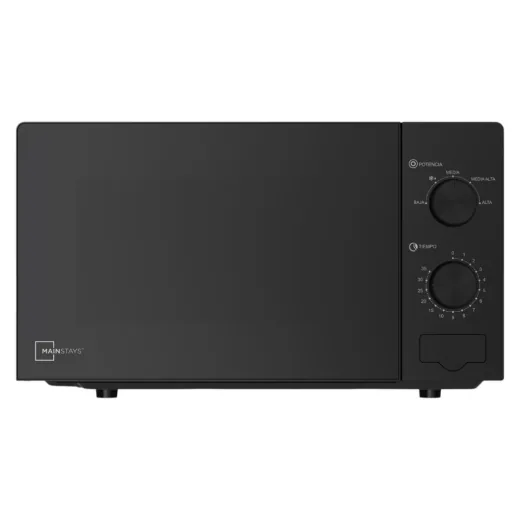

Precio en cada tienda
| Tienda | Precio | Antes | Disponibilidad | |
|---|---|---|---|---|
| Walmart | L 1,295 | Disponible | Ver en tienda › |
Precios referenciales tomados de cada tienda el 28 de noviembre de 2026. El precio válido es el que muestra la tienda al comprar.
Historial de precio
Lo seguimos desde el 17 de noviembre. Precio más bajo registrado: L 1,295 en Walmart (24 de noviembre), igual que hoy. Cambios de precio registrados: 1.
Características
| Color | Blanco |
|---|---|
| Contenido del empaque | 1 microondas manual |
| Marca | Mainstays |
| Capacidad | 20 L |
| Uso recomendado | Calentamiento y cocción rápida de alimentos en el hogar |
| Voltaje | 120 v |
| Watts de potencia | 700 w |
| Cantidad de puertas | 1 puerta |
Descripción
Practicidad y comodidad para tu cocina con el microondas Mainstays de 20 litros (0.7 pies cúbicos). Su diseño compacto es ideal para espacios pequeños y perfecto para calentar, descongelar y preparar tus alimentos de manera rápida y sencilla.
Cuenta con controles manuales fáciles de utilizar, ofreciendo una experiencia práctica para el uso diario en el hogar.
Otros microondas Mainstays
 Microondas Mainstays Digital capacidad de 20 L de 0.7 pies cúbicosL 1,695En Walmart
Microondas Mainstays Digital capacidad de 20 L de 0.7 pies cúbicosL 1,695En Walmart Microondas Mainstays Panel de 1.1 Pies CúbicosL 2,295En Walmart
Microondas Mainstays Panel de 1.1 Pies CúbicosL 2,295En Walmart Microondas Mainstays Digital Capacidad 25 L de 0.9 Pies CúbicosL 2,495En Walmart
Microondas Mainstays Digital Capacidad 25 L de 0.9 Pies CúbicosL 2,495En Walmart Microondas Mainstays Digital 25 L 0.9 CFL 2,595En Walmart
Microondas Mainstays Digital 25 L 0.9 CFL 2,595En Walmart Microondas Mainstays Digital de 30 L (1.1 CF)L 2,995En Walmart
Microondas Mainstays Digital de 30 L (1.1 CF)L 2,995En Walmart